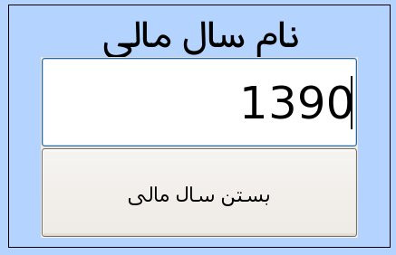

۱- بستن سال مالی
به کمک این پنل مدیریت می تواند در انتهای سال مالی مجموعه کلیه حساب ها ببندد و سال مالی جدید را تعریف کند.

به منظور بستن سال مالی, سال مورد نظر را در کادر تعبیه شده وارد نموده و بر روی دکمه بستن سال مالی کلیک نمایید.